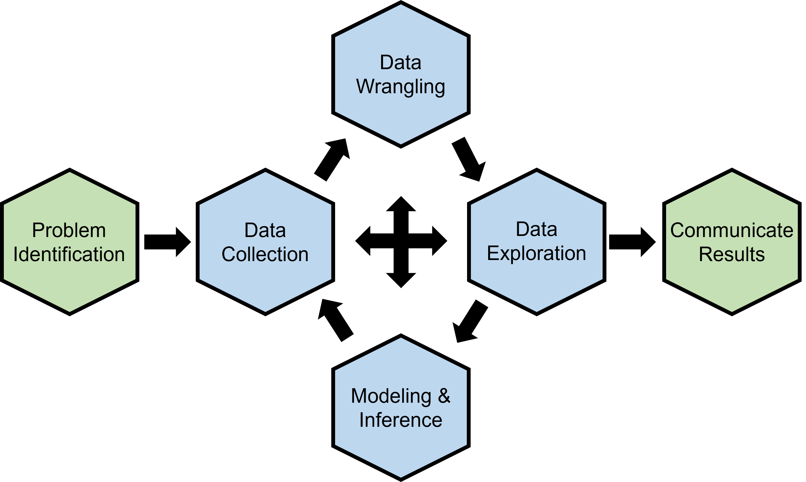

Fundamentals of Data Science!
Course Information
Number and Credits
MTH-391, 3 credits
Schedule
MWF 1:35PM - 2:30 PM, one-time course offering for Spring 2025
Prerequisites
MTH-161 or MTH-201
Distribution Requirements
If you’re a Mathematics or Applied Mathematics major, this course can be used to satisfy your computational or modeling requirements.
Instructor
Description
This course provides students with a comprehensive understanding of the essential principles and techniques in the field of data science. Through this course, students will learn to proficiently handle and visualize structured and unstructured data, quantitative and qualitative data, formulating questions, and extract valuable insights using modern statistical methods and algorithms.
Notes
Students in this course will be evaluated through mini-assignments and a semester-long data science project. Students will gain hands-on experience in using simple and readable programming codes in R and Python for data processing and creating multivariate data visualizations. Students will also develop skills in creating reproducible reports, communicate findings effectively, and navigate through data ethics.
Learning Outcomes
- Able to process structured and unstructured data, and produce informative data tables and visualizations, as well as able to understand and explain the basic structure of data, how it is collected, and evaluate its limitations.
- Able to apply statistical methods, techniques, approaches, and algorithms to extract necessary information and insights from data.
- Able to critique claims and evaluate decisions based on data, and write and run simple programming codes for data analysis and visualization.
- Able to apply data science concepts and methods to solve problems in real-world contexts and able to communicate results effectively.
Learning Objectives
- Work with a diversity of data which includes spatial, temporal, text, and network data.
- Use appropriate exploratory data analysis methods to extract knowledge from data.
- Create multivariate data visualizations that are both static and interactive.
- Apply modern statistical methods and algorithms to analyze data.
- Effectively write stories about data for a non-technical (or technical) audience.
- Utilize a reproducible and collaborative workflow for data analysis.
The full syllabus and a tentative topics schedule for MTH-391 Fundamentals of Data Science will be available in January 2025.
Why Data Science?
Data science is a broad field that focuses on extracting knowledge and insights from data using scientific approaches, tools, and algorithms. It merges techniques from statistics, computer science, and domain knowledge to analyze extensive datasets and guide informed decision-making.
This course’s purpose is to introduce you to the fundamental principles of data science, specifically focusing on the data science lifecycle. Throughout the course, you’ll gain an understanding of the key stages involved in working with data. The goal is to equip you with a solid foundation so you can not only understand how the lifecycle works but also decide where you’d like to dive deeper. Whether you’re interested in data visualization, statistical learning, or data storytelling, this course serves as a gateway to explore specific parts of the lifecycle more thoroughly as you progress.
Data Science Myths and Misconceptions
Data science has become ubiquitous and often misunderstood. Here are seven myths and misconceptions about data science.
“Data science is the same as machine learning.”
Machine learning is an application of data science. While machine learning is a component of data science projects, data science involves a much wider range of activities and can be applied to various problems, even without using machine learning.
“Data science is all about coding.”
While using R or Python as programming tools for data analysis, hardcore coding is not the primary goal of data science. Instead, think of R and Python as advanced calculators (like the TI-89 and Excel) that can handle large and complex data sets.
“Advanced mathematics are needed to be a ‘good’ data scientist.”
Mathematics is useful but not a strict requirement for success as a data scientist. A balance of technical, analytical, and domain knowledge is more critical with a basic understanding of statistics, probability, calculus, and linear algebra.
“Data science is the solution to all problems.”
Data science is a powerful tool, but it is not the solution for all problems. It can complement other approaches, help in decision-making, and solve specific types of problems, but it has limitations that require broader human insight, creativity, and ethical consideration.
“Talking about your data analysis results is not important.”
Effective communication is crucial in data science. It’s not just about analyzing data and applying fancy tools, but also about translating findings into actionable insights that non-technical stakeholders can understand.
“Data science is easy.”
While some foundational concepts can be taught in a semester, mastering data science typically takes much longer, involving practical experience and continual learning.
“You can finish a well-written data science project alone.”
A well-written data science project incorporates multiple perspectives and areas of expertise. As the saying goes, “the real lesson you learn in your journey is how you make friends along the way.”
These misconceptions can lead you to unrealistic expectations and misunderstandings on what data science is about. It’s important to have a clear understanding of what data science can and cannot do, which what you will learn in this course through a data science project.